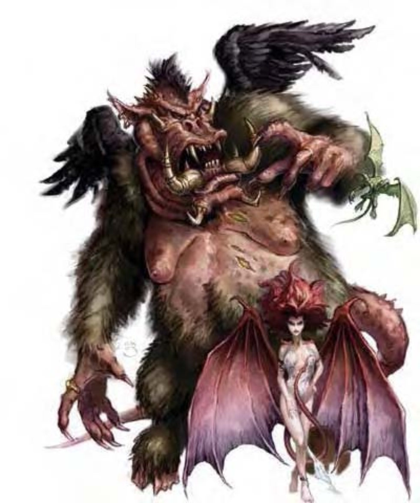

| 资料栏位 | 判魂魔 (Nalfeshnee) 超大型异界生物（混乱、外界、邪恶、塔那） |
|---|---|
| 生命骰 | 14d8+112 (175HP) |
| 先攻 | +1 |
| 速度 | 30英尺 (6格)、飞行40英尺 (不良) |
| 防御等级 | 27 (-2体型、+1敏捷、+18天生)、接触9、措手不及26 |
| 基本攻击/擒抱 | +14 / +29 |
| 攻击 | 啮咬+20近战 (2d8+7) |
| 全力攻击 | 啮咬+20近战 (2d8+7) 及 2爪抓+17近战 (1d8+3) |
| 占据/触及 | 15英尺 / 15英尺 |
| 特殊攻击 | 打击、类法术能力、“召唤塔那魔族” |
| 特殊能力 | 伤害减免10/善良、黑暗视觉60英尺、对电击与毒素免疫、强酸抗力10、寒冷抗力10、火焰抗力10、法术抗力22、心灵感应100英尺、真实目光 |
| 豁免 | 强韧+17、反射+10、意志+15 |
| 属性 | 力量25、敏捷13、体质27、智力22、感知22、魅力20 |
| 技能 | 哄骗+22、专注+25、交涉+26、易容+5 (扮演+7)、躲藏+10、威吓+22、神秘知识+23、聆听+31、潜行+18、搜索+23、察言观色+23、法术辨识+25 (卷轴+27)、侦察+31、生存+6 (追踪+8)、使用魔法装置+22 (卷轴+24) |
| 专长 | 顺势斩、精通冲撞、多重攻击、猛力攻击、专攻武器 (啮咬) |
| 环境 | 无底深渊 |
| 组织 | 单独或行列 (1个判魂魔、1个狂战魔、加上2-5个弗洛魔) |
| 挑战级数 | 14 |
| 宝藏 | 标准钱币、双倍宝物、标准物品 |
| 阵营 | 总是混乱邪恶 |
| 进化 | 15-20HD (超大型) ; 21-42HD (巨型) |
| 等级修正值 | ― |
猿与肥胖野猪的怪诞混合。以后脚站立，比人类高三倍以上。背后长着一对羽翼，和躯体其他部分比起来，荒谬地小。
巨大恶魔等待毁灭灵魂来到无底深渊，以进行审判。当然，判魂魔非常享受惩罚这些罪人的机会。尽管翅膀小，判魂魔仍旧可以飞行。判魂魔超过20英尺高，8000磅重。
战斗判魂魔在黑暗世界执行任务同时，通常因不屑而鄙视战斗。但若机会来临，他们会屈从于血腥的诱惑而作战。判魂魔以打击能力瘫痪对手，趁其无法还手时将其屠杀。在计算伤害减免时，判魂魔的天生武器与持有武器都视为混乱阵营与邪恶阵营。
打击（超自然）：每天3次，判魂魔可造出一圈秽暗光线。能力启动时，判魂魔躯体四周流动环绕七彩光线。1轮后，该光线爆炸，半径60英尺。范围内所有生物必须通过意志检定（DC=22），否则即受内心最害怕事物的影像缠绕，晕眩1d10轮。若遭受攻击，受害者AC的敏捷加值与盾牌加值仍可计入，但无法动作。其他恶魔对本能力免疫。豁免DC的调整值与魅力调整值相同。
类法术能力：随意施展――“召雷术” (DC=18)、“弱智术” (DC=20)、“高等解除魔法”、“缓慢术” (DC=18)、“高等传送术” (自身加上50磅重物品)、“秽暗灵光” (DC=23)。施法者等级12。豁免DC的调整值与魅力调整值相同。
“召唤塔那魔族”（类法术能力）：每天2次，判魂魔可召唤1d4个弗洛魔、1d4个狂战魔或1个迷诱魔，成功机率为50%；或者召唤另一个判魂魔，成功机率为20%。此能力等同于五级法术。
真实目光（超自然）：判魂魔拥有持续的真实目光能力，效果与同名法术相同（施法者等级14）。
技能：判魂魔在进行“聆听”、“侦察”检定时具有+8种族加值。